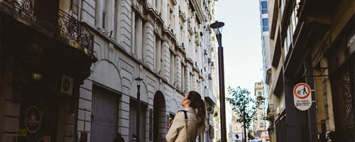

Próximos Tours
Recoleta
14 de Septiembre
Conocé uno de los focos culturales más importantes del continente.

Palermo
8 de Octubre
Sumate a visitar los jardines más lindos de Buenos Aires.
Microcentro
22 de Octubre
Vamos a adentrarnos en el corazón histórico de la ciudad.
Recoleta
14 de Septiembre

Uno de los focos culturales más importantes del país, concentra tanto la escena contemporánea como el patimonio artístico histórico de la ciudad. Entre sus avenidas al borde de la zona portuaria podemos encontrar:
- El Museo Nacional de Bellas Artes
- El Cementerio de la Recoleta
- El Palais de Glace
- El Centro Cultural Recoleta
Además, varias cuadras de parques, incluyendo la Plaza Francia y su feria, y cruzando la avenida observamos la entrada a la Facultad de Derecho de la Universidad de Buenos Aires.
Palermo
8 de Octubre

Uno de los barrios más populares de la ciudad. Su zona este concentra la mayor cantidad de espacio verde contiguo entre la Avenida Santa Fe y la Avenida del Libertador. Entre sus parques podemos encontrar:
- El Jardín Botánico Carlos Thays
- El Ecoparque
- El Rosedal de Palermo
Además, a pocas cuadras sobre Av. Libertador se encuentra el Jardín Japonés, y desde la Av. Santa Fe hacia el lado oeste nos dirigimos hacia Palermo Soho.
Microcentro
22 de Octubre
El corazón histórico de la ciudad, ideal para aquellos interesados por la historia. A partir de las diagonales que se cruzan sobre la Avenida 9 de Julio, podemos visitar:
- El Obelisco
- La Plaza de Mayo
- El Cabildo
Además, a pocos minutos se encuentra el Teatro Colón, la Av. Corrientes, foco cultural, y un poco más al sur uno de los barrios más antiguos de la ciudad, San Telmo.